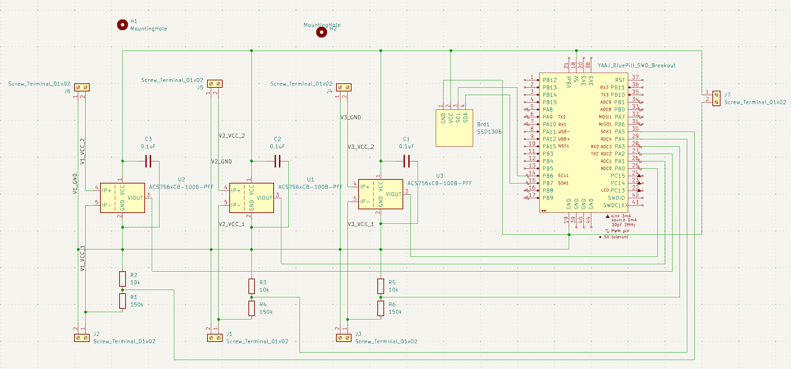
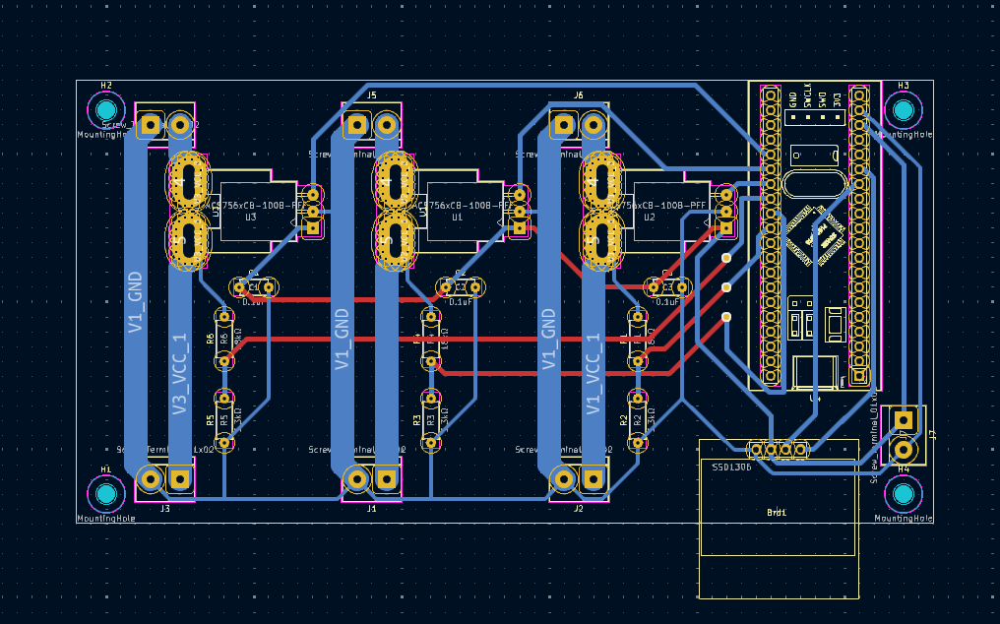

3-Channel Power Diagnostics PCB
To support high-current robotic actuation, I architected and routed a custom mixed-signal PCB in KiCad. This board is designed to monitor and distribute power across three independent motor channels, providing real-time telemetry for dynamic load testing. The system utilizes an STM32 (Blue Pill) microcontroller, heavy-duty Allegro ACS756 Hall-effect sensors for ±100A isolated current sensing, and custom 16:1 resistor dividers to safely step down high-voltage rails for the ADCs. Rather than relying on external fabrication, I prototyped the physical hardware entirely in-house by machining the board from raw copper-clad FR4 using a CNC router and hand-soldering all components. An embedded C++ telemetry loop continuously parses the data and pushes real-time power draw diagnostics to an I2C OLED display.

